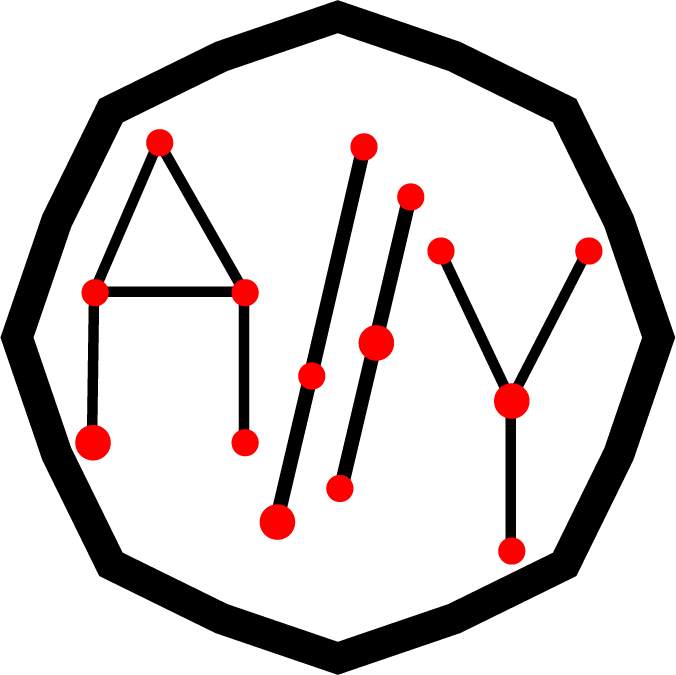

3rd Workshop on Accessible Data Visualization, IEEE VIS 2026
In conjunction with:

Data visualization is widely applied in fields such as data science, machine learning, healthcare, business, and education. Nevertheless, visual representations may create barriers for individuals with sensory, motor, cognitive, or neurological disabilities. Consequently, the accessibility and visualization research communities have increasingly prioritized the development of accessible data visualizations. Research efforts encompass user studies with people with disabilities to identify access barriers, the formulation of theoretical frameworks, and the creation of technical solutions, including auto-generated textual descriptions, sonification, and tactile or physical artifacts. Despite increased attention, these perspectives remain fragmented across venues and subcommunities, which limits sustained interdisciplinary dialogue. In response to the increasing interest and ongoing challenges at this intersection, the in-person Accessible Data Visualization (AccessViz) workshop aims to convene researchers, practitioners, and members of the disability community to foster collaboration, share innovative findings, and shape the future of accessible data visualization research at IEEE VIS. The workshop is expected to stimulate new contributions and support the development of a sustained research agenda focused on accessibility in visualization at IEEE VIS.
Call for Papers
We welcome short/position papers (2-4 pages) that discuss topics relevant to accessible data visualizations. Papers can summarize previous work, propose future work or ideas, present tools and systems, or present a vision. Each submission will be reviewed by two members of the organizing team. Potential topics include, but are not limited to:
- Understanding accessibility needs of different disability communities
- Building and designing the accessibility support tools for interactive visualization
- Empowering users with disability create data visualization and alternate data representations
- Transformation between different information modalities (visualization, sonification, haptics)
- Collaboration between users who may have diverse accessibility needs
Submission Guidelines
- Submit your paper using PCS. Our workshop submission track is not available yet, but it will be added soon.
- Authors will have the option to make their paper(s) either archival or non-archival after acceptance. Archival papers will appear in IEEE Xplore.
- We recommend authors to use the VGTC conference two-column format, especially for papers that authors want to publish in IEEE Xplore. Please consult the IEEE VIS formatting guidelines for more details and templates. Note: This is not a strict requirement. We will review all submitted papers the same regardless of their formatting.
- We highly recommend screen reader accessible final submissions. Please see the VIS Accessibility Guide to learn how you can make your contribution accessible.
For any questions or inquiries, please email us at accessiblevizworkshop@gmail.com.
Organizing Committee


Steering Committee
Announcement
- We are excited to share our outcomes report after the second iteration of the workshop: here
Important Dates
- July 1, 2026: Submission due (11:59 PM AOE)
- TBD: Workshop Date